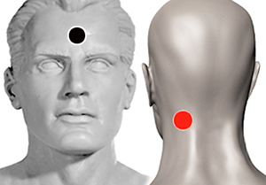

Percepción "Tercer ojo"
Par
hipófisis - mastoides
temporal (I) - hipófisis
plexo braquial - P. braquial

Generalidades:
Percepción extrasensorial "Tercer ojo". aumenta la sensibilidad, las sensaciones, incluso puede inducir percepción extrasensorial, (telepatía, clarividencia).